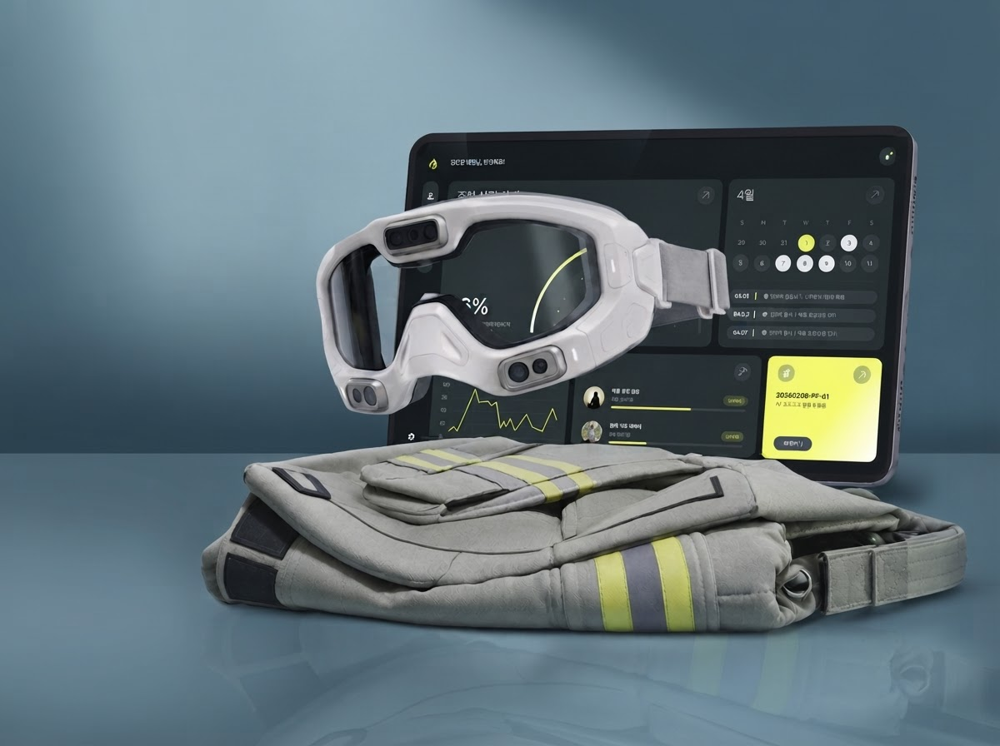
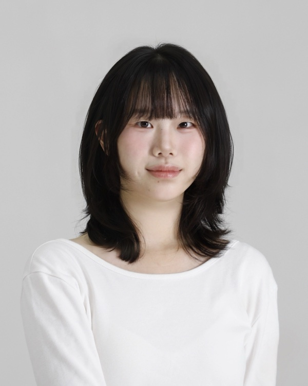

what do you dream of?


(About)
디자인의 기준을
끊임없이 검증하는 사람
기획부터 디자인, 프로그래밍까지 전 과정을 논리적으로 연결하고, 사용자 관점에서 타당한 근거가 있는지를 판단합니다. 그 과정에서 여러 가능성 사이에서 흔들리기도 하지만, 결국 기준을 세우고 결과물의 완성도를 높이는 데 집중합니다.

- 이름
- 노승민 · NOH SEUNGMIN
- 생일
- 2004.05.07
- 학력사항
- 2023.02 성복고등학교 졸업
2025.03 계원예술대학교 입학
2027.02 계원예술대학교 졸업 예정
- 경력 및 교내활동
- 2025.03 – 2026.10 수지 영원한 미소 보조강사
2025.03 신입생 우수장학 - 수상경력
- 2026 커뮤니케이션 디자인 국제 어워드 입선